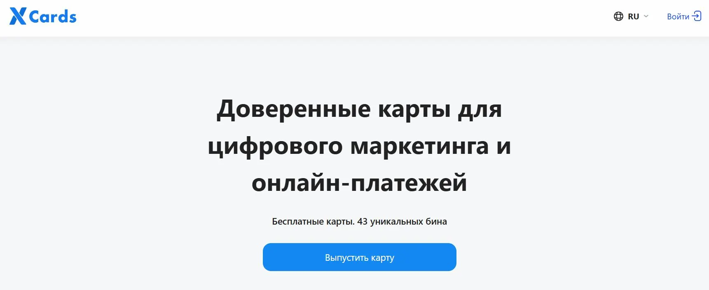
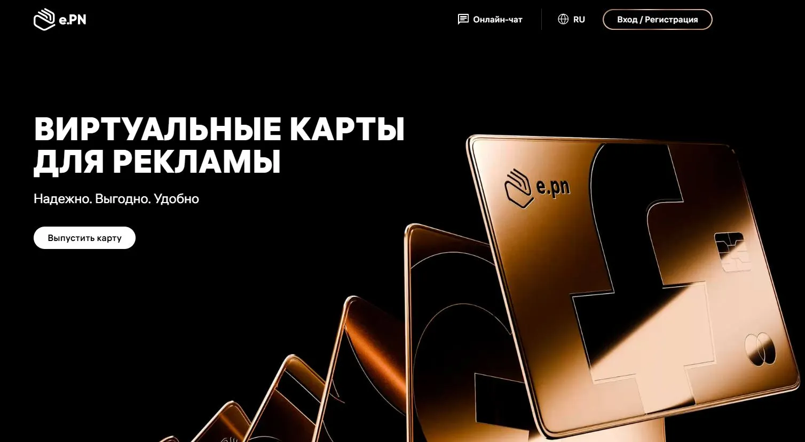
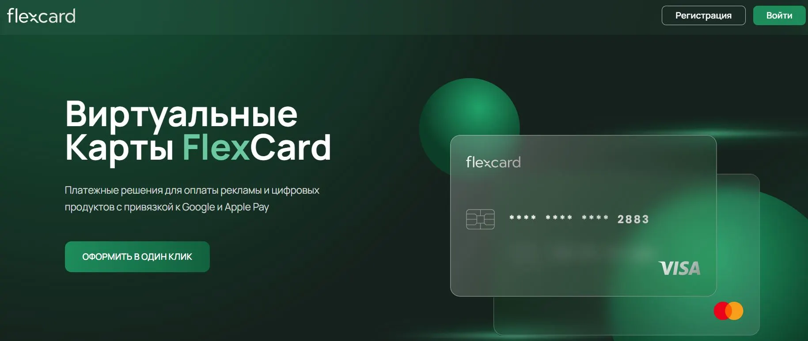
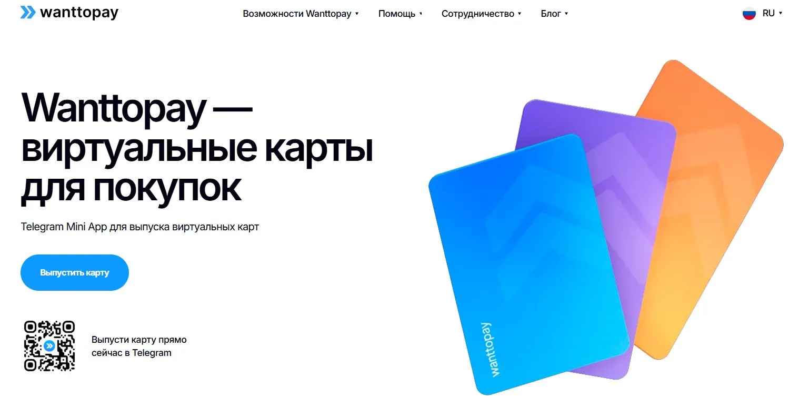
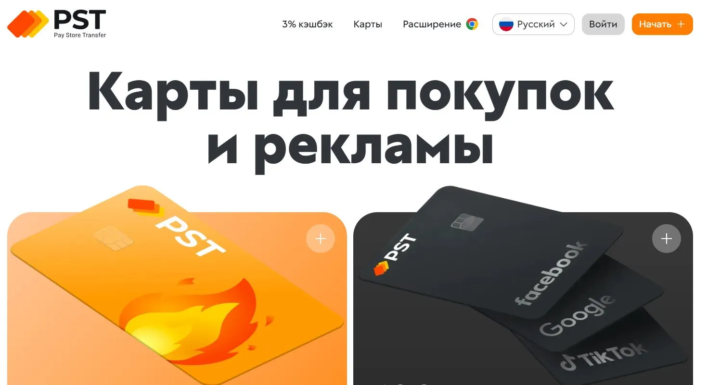
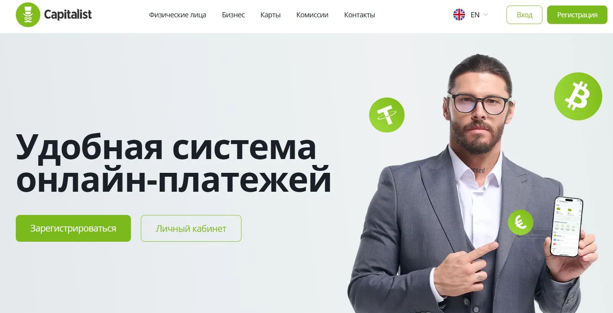
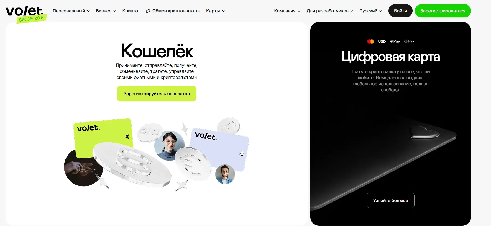
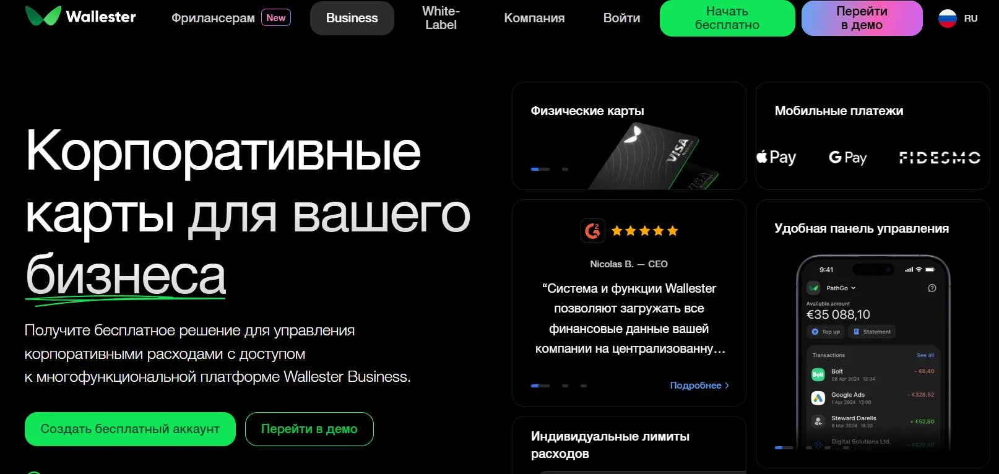

Когда я впервые услышал, что можно оформить виртуальную дебетовую карту онлайн без посещения банка, отнёсся к этому скептически. Казалось, что открытие нового счёта или выпуск пластика обязательно требует личного визита в офис. Однако постепенно, изучая возможности разных сервисов, я понял: виртуальная банковская карта даёт реальный шанс перевести свои финансы в удобный цифровой формат. Такая онлайн карта позволяет экономить на комиссиях, оплачивать покупки за границей моментально и даже получать кэшбэк — без риска потерять привычный пластиковый носитель.
В этой статье я расскажу, как оформить виртуальную карту для оплаты в несколько кликов, какие сервисы помогают открыть онлайн карту виртуальную с разными валютами и почему это выгоднее, чем держать физический «пластик». Если вы давно задумывались о том, как сделать виртуальную карту или хотите узнать, где можно открыть виртуальную дебетовую карту без очередей, то этот обзор именно для вас.
ТОП-8 платформ где можно открыть виртуальную карту банка
Ниже представлено восемь сервисов, где можно быстро завести виртуальную карту банка онлайн, а также использовать её для международных платежей, переводов и покупок в интернете.
1. XCards
XCards — это универсальный сервис, который подойдет и новичкам, и опытным путешественникам. Виртуальная карта онлайн моментально выпускается, а лимиты растут по мере верификации: xcards.net
Преимущества:- Предлагает оформить виртуальную дебетовую карту онлайн бесплатно в рамках базового тарифа.
- Работа с евро, долларами и другими мировыми валютами.
- Встроенная аналитика расходов, помогающая контролировать баланс и избегать лишних трат.
2. EPN
EPN — сервис, где виртуальная карта дебетовая оформляется моментально, а ключевая особенность — кэшбэк-программа. Пользователи получают часть потраченных средств обратно при покупках у партнёров EPN: epn.net
Преимущества:- Выпуск карты онлайн без визита: быстрое заполнение данных и практически мгновенный доступ к реквизитам.
- Поддержка иностранных валют, выгодные курсы конвертации.
- Возможность накапливать баллы кэшбэка и использовать их на новые покупки.
3. FlexCard
FlexCard — это платформа, где оформление карты занимает буквально пару минут. Пользователь заполняет заявку, и моментальная виртуальная карта с реквизитами оказывается в его распоряжении: flexcard.cards
Преимущества:- Быстрый выпуск без посещения банка.
- Гибкий тариф: от бесплатного обслуживания для определённых операций до повышенных лимитов при верификации.
- Возможность оплачивать заграничные сервисы благодаря мультивалютным расчётам.
4. WantToPay
WantToPay предлагает виртуальную карту банка без посещения офиса, причём выпуск онлайн карты занимает не более 10 минут. Особенность в том, что сервис ориентирован на простоту использования и быструю выдачу реквизитов: wanttopay.net
Преимущества:- Прозрачные комиссии: всё, что касается конвертации валют, прописано в личном кабинете.
- Несколько тарифов — от бесплатного для редких платежей до безлимитного с месячной абонплатой.
- Поддержка перевода денег на другие онлайн-карты банковские бесплатно (при соблюдении условий).
5. PST.NET
PST.NET подойдёт тем, кто ищет зарубежную виртуальную карту и хочет проводить трансграничные платежи с наименьшими расходами. Преимущественно ориентирован на тех, кто работает с иностранной валютой или делает покупки за границей: pst.net
Преимущества:- Система поддерживает долларовые и евровые счета, что облегчает расчёты в международных магазинах.
- Виртуальная дебетовая карта выпускается онлайн моментально, и при этом нет привязки к физическому пластику.
- Лёгкая интеграция с другими платёжными системами и электронными кошельками.
6. Capitalist
Capitalist давно известен фрилансерам и тем, кто хочет открыть виртуальную карту для оплаты без очередей. Здесь легко настроить мультивалютный счёт в долларах, евро или рублях: capitalist.net
Преимущества:- Минимальные комиссии за переводы между своими счетами и сторонними платформами.
- Мгновенная активация виртуальной карты после регистрации.
- Поддержка различных электронных кошельков для вывода и пополнения.
7. Volet (может потребоваться подключение через зарубежный сервер)
Volet позволяет оформить виртуальную или пластиковую Mastercard/Visa за минуту, хранить в кошельке десятки валют плюс более сотни крипто-активов и сразу тратить их в онлайне или через Apple/Google Pay — пластик заказывать не обязательно: volet.com
Преимущества:- Простой интерфейс и базовая регистрация: счёт открывается бесплатно, а KYC нужен только для повышенных лимитов и карты.
- Внутренняя конвертация между долларами, евро и ещё сотней валют выполняется мгновенно, без скрытых комиссий. Доступна конвертация между рублями, долларами и евро.
- Интерфейс доступен на двух десятках языков — удобно, если часто меняете страну или работаете с международной командой.
8. Wallester
Wallester подойдёт не только частным лицам, но и предпринимателям, которым нужна масштабируемая система расчётов. Однако и простым пользователям сервис даёт возможность открыть виртуальную карту банка для безопасных онлайн-платежей: wallester.com/ru/
Преимущества:- Мультивалютные счета, где можно держать средства в удобной валюте.
- Расширенные лимиты на переводы после прохождения идентификации.
- Кэшбэк за некоторые виды покупок, снижение комиссий при активном использовании карты.
Мои показатели для выбора виртуальной карты
Бесплатный выпуск
Если вы хотите открыть виртуальную карту банка онлайн, обратите внимание на то, взимается ли плата за выпуск. Некоторые сервисы делают карту виртуальную бесплатно, но могут брать комиссию за обслуживание.
Уровень комиссий
Проверьте, нет ли скрытых комиссий: конвертация валют, переводы, снятие наличных в банкоматах. Иногда виртуальная карта онлайн может облагаться незаметными «процентами», что делает пользование дорогим.
Лимит и обслуживание счёта
При оформлении учитывайте дневные и месячные лимиты. Чем выше лимит, тем свободнее вы распоряжаетесь деньгами. Но иногда для повышения лимитов требуется пройти KYC.
Валютная поддержка
Если вам нужна карта для оплаты за границей виртуальная, смотрите, какие валюты доступны и как осуществляется обмен. Мультивалютный счёт — удобное решение, когда покупки совершаются в нескольких валютах.
Безопасность
Виртуальная карта без посещения банка должна иметь надёжные механизмы защиты: блокировка по запросу, уведомления о транзакциях, двухфакторная аутентификация. Важно снизить риск несанкционированных операций.
Мои советы:
-
Сравнивайте курсы при конвертации
Прежде чем создать виртуальную карту в определённой валюте, посмотрите разницу курсов у нескольких платформ. Иногда выгоднее сразу завести счёт в долларах или евро, чтобы расплачиваться за рубежом без двойной комиссии. -
Используйте несколько карт
Можно завести отдельную карту для подписок, а другую — для крупных трат или переводов. Так вы чётко разделите расходы и будете понимать, куда уходят деньги. -
Проверяйте акции и кэшбэк
Некоторые сервисы предлагают временно увеличить процент кэшбэка или отменить комиссию за обслуживание. Если планируете оформить виртуальную дебетовую карту и пользоваться ею активно, подобные бонусы помогут сэкономить. -
Учтите санкционные ограничения
В России сейчас не работает Apple Pay и Google Pay для многих карт, поэтому, если вам нужна бесконтактная оплата, смотрите, поддерживает ли сервис альтернативы вроде Мир Pay или местные решения в вашей стране пребывания. -
Внимательно читайте тарифы
Онлайн карты банковские часто рекламируются как бесплатные дебетовые карты, но при определённых условиях. Убедитесь, что условия обслуживания, перевыпуска и конвертации вам подходят.
Перевод финансов в новый формат — это реальная возможность упростить жизнь, если вы привыкли к длинным очередям и бумажным договорам. Оформить виртуальную дебетовую карту онлайн куда проще, чем кажется: достаточно заполнить заявку, пройти быструю верификацию, и вот у вас уже есть продукт для оплаты за рубежом, переводов друзьям и покупок в интернет-магазинах. Выбирайте сервис, который предлагает бесплатный выпуск, прозрачные комиссии и удобную мультивалютность, чтобы не было проблем с конвертацией.
Благодаря таким сервисам, как FlexCard, PST.NET, Capitalist, ADVcash, WantToPay, XCards, Wallester и EPN, получить онлайн карту сейчас можно моментально, без ожидания физической доставки «пластика» и без визита в офис. Главное — внимательно ознакомиться с условиями, посмотреть, какую виртуальную карту можно оформить онлайн бесплатно и подойдёт ли выбранное решение для регулярных транзакций. Удачного вам перехода в мир цифровых финансов и безопасных платежей!